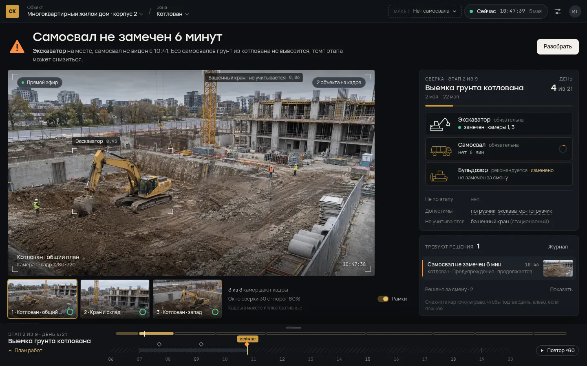
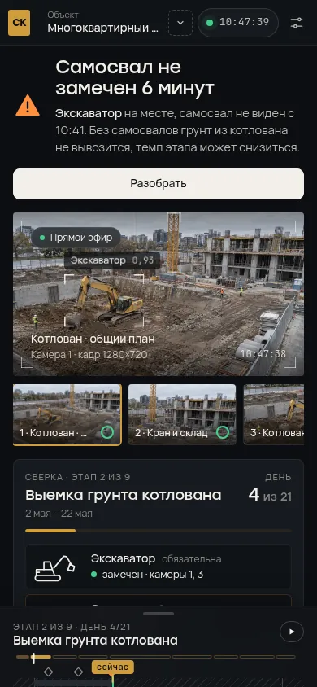
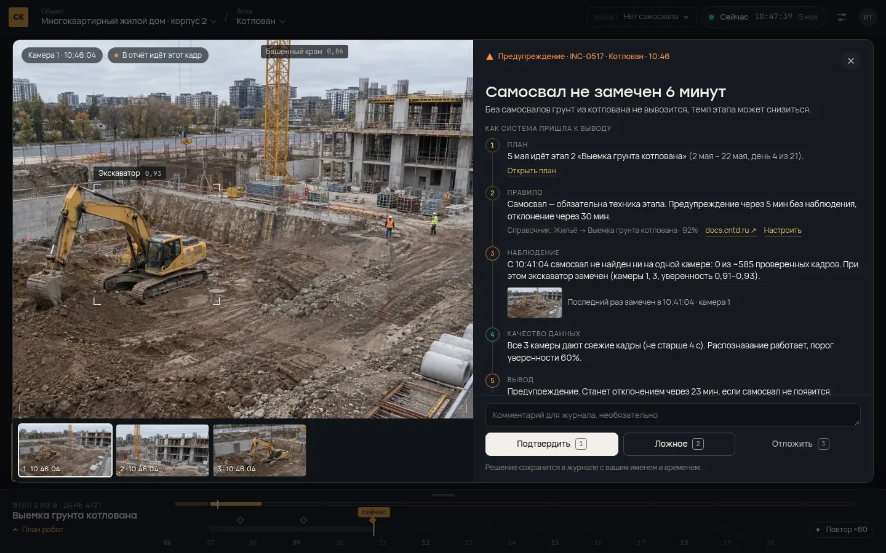
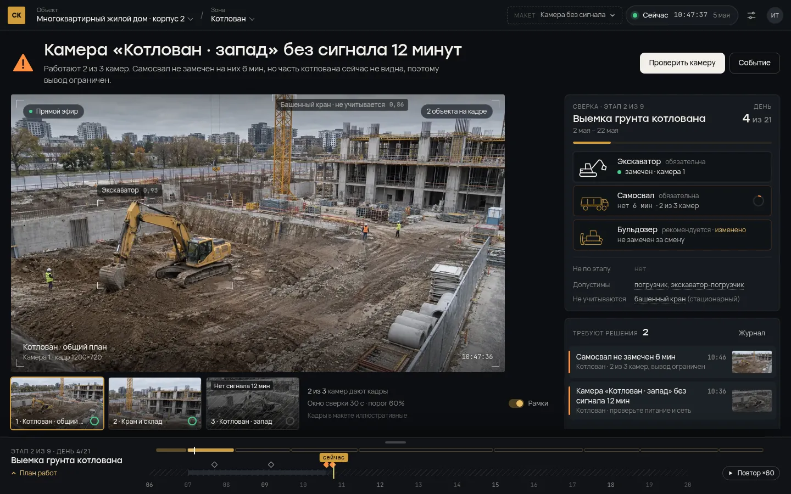
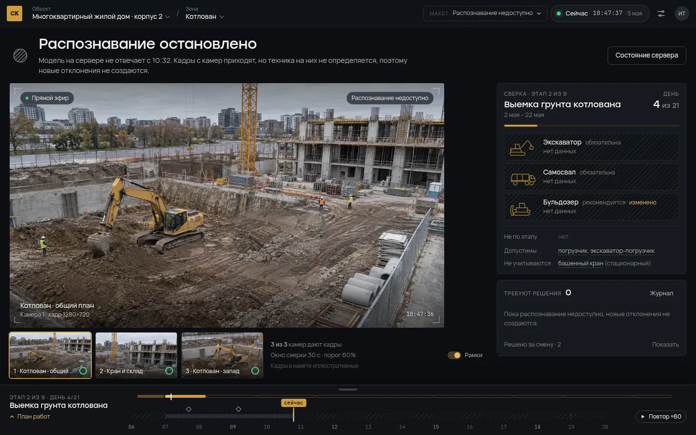
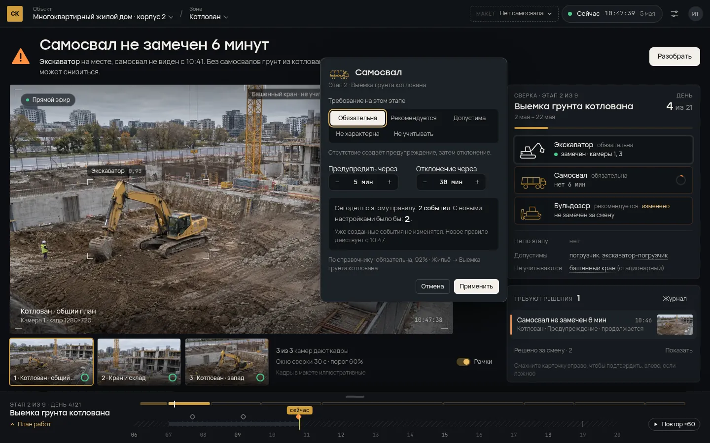
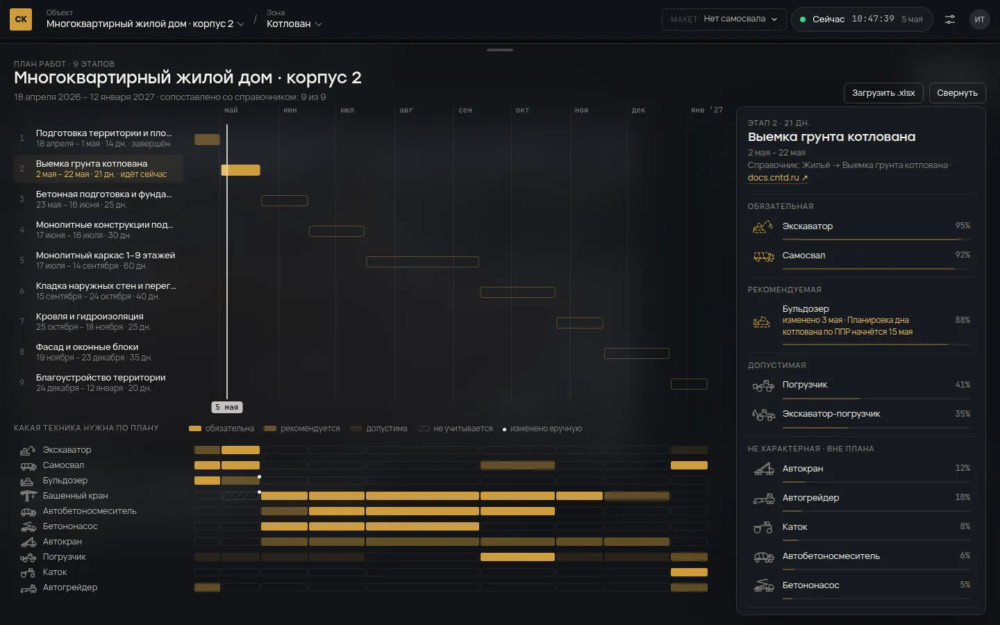
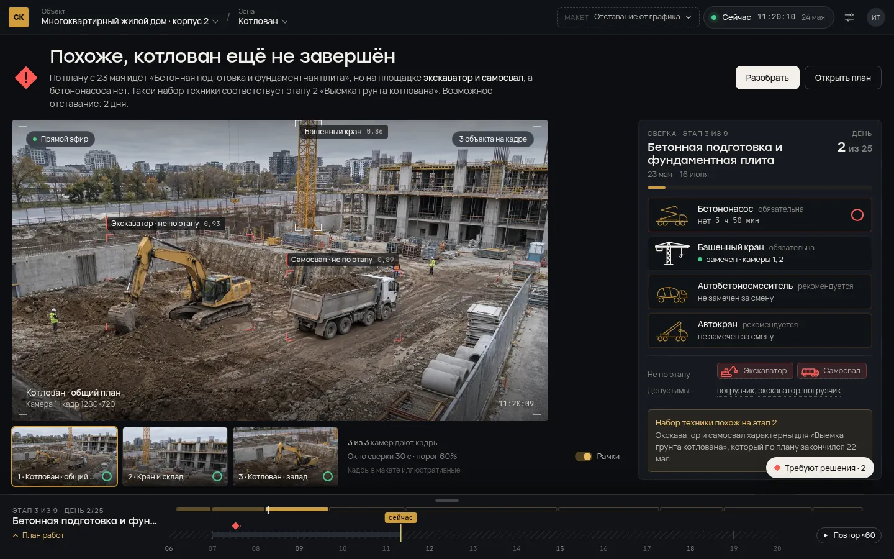

Прототип: docs/ui-concept/prototype.html (локально: python3 -m http.server 8000 в этой папке, затем http://localhost:8000/prototype.html). Кадры в прототипе иллюстративные, данные примерные; сценарии переключаются кнопкой «макет» в шапке.
Идея в одном абзаце
Оператору нужен ответ на один вопрос: идёт ли работа по плану прямо сейчас, а если нет, то что именно, где, чем это доказано и что делать. Поэтому вместо шести разделов один рабочий экран. Сверху одна фраза-вердикт и следующее действие. Ниже кадр и «сверка»: техника, которую требует план (золотой чертёж), и техника, которую видят камеры (белые «чернила»). Внизу свёрнутый план работ со шкалой дня, он раскрывается вверх в полный график. Всё подробное открывается из того объекта, к которому относится: клик по технике открывает её правило на этапе, клик по событию открывает разбор с доказательствами.
Что мешает сейчас
Полный разбор в аудите; здесь то, что прямо определяет дизайн.
| Проблема | Где | Что это значит для UI |
|---|---|---|
Все статусные цвета переопределены в одно золото #cf9d3d |
src/styles.css:273-280 |
Ошибка, предупреждение и норма выглядят одинаково. Нужна семантическая палитра, золото только для плана. |
| Отклонения создаются при неработающей модели, «RTSP LIVE» показывает встроенное фото, «Данные актуальны · 8 сек» и «Система активна» записаны в JSX | src/App.tsx:498, :598, :5772, :5961 |
Интерфейс уверенно сообщает то, чего не знает. Нужны честные состояния: «нет данных», «нет сигнала», «вывод ограничен». |
| Новый пользователь видит 9 этапов чужого плана, хотя у его объекта в API 0 этапов | проверено 16.10 на стенде | Пустой объект должен выглядеть пустым и вести к первому запуску. |
| Одна сущность (событие) живёт в «Фотоархиве», «Отчётах» и тостах; правила техники считаются в трёх функциях | getRequiredMachineryForStage, getStageMachineryRules, getEffectiveStageRules |
Одно место для события (разбор), одно место для правила (редактор на этапе). |
| Время записи не выбирает этап, «сегодня» зашито как 24 сентября | src/App.tsx:1852 |
Время наблюдения управляет всем экраном. Это главный элемент управления, а не подпись. |
| Текст 9–11 px, капс, YOLO/ERROR/STAGE MACHINERY SERVICE | по всему App.tsx |
Рабочий текст от 13–14 px, вторичный от 12 px, технические термины уходят в настройки. |
| Диалоги не закрываются по Esc, нет фокуса | модалки в App.tsx |
Все слои закрываются Esc, фокус уходит в диалог и возвращается. |
Куда переезжают разделы
| Было | Стало |
|---|---|
| Наблюдение | Главный экран: кадр, источники, сверка этапа |
| Фотоархив | Доказательства внутри разбора события: кадры всех камер на момент события, отметка кадра для отчёта |
| Прогресс (Гант) | План в нижней панели. Свёрнут: лента этапов и шкала дня. Развёрнут: график, профиль этапа, матрица «какая техника нужна по плану» |
| Аналитика | Профиль этапа в плане и редактор правила по клику на технику. Радар убран: он повторял таблицу и не отвечал на вопрос оператора |
| Отчёты | Журнал событий и выгрузка акта за период, выбранный на шкале времени (в прототипе пока заглушка) |
| Настройки | Лист настроек: Контроль, Источники, Смена и объект |
Главный экран
- Шапка. Объект и зона, время наблюдения («Сейчас» с живой точкой или «Запись 09:20»), настройки. Время одно для всего экрана.
- Вердикт. Одна фраза и одно действие. Примеры из прототипа: «Самосвал не замечен 6 минут», «Работы идут по плану», «Камера «Котлован · запад» без сигнала 12 минут», «Распознавание остановлено», «Похоже, котлован ещё не завершён». Под фразой одно-два предложения с причиной и последствием.
- Кадр. Рамки в виде уголков видоискателя с подписью и уверенностью. Техника не по этапу красная, стационарная приглушена. Наведение на технику в сверке подсвечивает её на кадре и гасит остальное.
- Сверка этапа. Этап, даты, день N из M. Ожидаемая техника списком: силуэт, требование, факт («замечен · камеры 1, 3» или «нет 6 мин»), кольцо до следующего порога. Ниже: «не по этапу», «допустимы», «не учитываются». Если набор техники похож на другой этап плана, система говорит об этом.
- Очередь решений. Карточки событий. Клик открывает разбор, свайп вправо подтверждает, влево отмечает ложным, есть отмена. Решённые за смену свёрнуты ниже.
- План внизу. Лента этапов, шкала дня с записью, метками событий и бегунком времени. Повтор ×60 проигрывает последние минуты, чтобы показать, как возникло отклонение.


Попробуйте в прототипе: «Повтор ×60» внизу справа проигрывает 10:39–10:47. Самосвал уезжает с кадра, силуэт в сверке испаряется, кольцо отсчитывает 5 минут, событие вылетает из слота в очередь, вердикт меняется.
Перетащите бегунок на шкале дня, чтобы посмотреть запись: при 09:08 самосвала нет 3 минуты, и система ещё не тревожит.
Разбор события
Панель вырастает из карточки события. Слева доказательства: кадры всех камер на момент события, рамки, какой кадр уйдёт в отчёт. Справа заголовок, последствие и цепочка вывода в пять шагов:
- План: какой этап идёт в эту дату, день этапа.
- Правило: требование к технике, пороги, источник в справочнике со ссылкой на норматив, кнопка «Настроить».
- Наблюдение: сколько кадров проверено, что замечено вместо этого, когда техника была видна последний раз (с кадром).
- Качество данных: все ли камеры давали свежие кадры, работает ли распознавание. Если нет, вывод помечен как ограниченный.
- Вывод: уровень и когда станет отклонением.
Внизу закреплены решения: «Подтвердить», «Ложное», «Отложить» (клавиши 1, 2, 3) и комментарий. Показываем статус сохранения и не скрываем ошибку сохранения.
Цепочка закрывает критерий ТЗ «явная и проверяемая связь между наблюдаемой техникой и этапами» и «обоснованность предупреждений»: каждый шаг можно проверить по ссылке или кадру.

Правила честности
Это и есть защита от нейрослопа: интерфейс не говорит больше, чем знает.
- «Не замечен на 3 камерах за 6 минут», а не «отсутствует на площадке».
- Распознавание недоступно: у техники статус «нет данных» со штриховкой, события не создаются, вердикт говорит об этом прямо.
- Камера без сигнала: её кадр выцветает по мере устаревания, зона не участвует в выводах, связанный вывод помечен «2 из 3 камер, вывод ограничен».
- Подтверждение не равно устранению. После «Подтвердить» вердикт остаётся, пока техника не вернётся.
- Каждая подпись вычислена: свежесть кадра, число камер, уверенность, источник нормы. Постоянных «Система активна» нет.
- Изменение правила не переписывает историю. До применения показываем, сколько событий было бы сегодня с новыми настройками; созданные события остаются.
- Вне смены и в первые 30 минут смены, пока собирается техника, отсутствие не считается отклонением.
- В интерфейсе оператора нет слов AI, YOLO, нейросеть. Модель и классы видны в настройках источников.


Детальная настройка рядом с местом действия
| Что | Где открывается | Что можно поменять |
|---|---|---|
| Техника на этапе | Клик по технике в сверке, по строке профиля этапа или по ячейке матрицы в плане | Требование: обязательна, рекомендуется, допустима, не характерна, не учитывать. Через сколько предупреждение и отклонение. Влияние на сегодняшние события, источник в справочнике, сброс к справочнику, кто и когда изменил |
| Этап | Строка этапа в развёрнутом плане | Профиль техники этапа с процентами и группами |
| Контроль объекта | Настройки → Контроль | Окно сверки, порог уверенности, пороги предупреждения и отклонения, нехарактерная техника, пороги профиля 80 / 50 / 20 % |
| Источники | Настройки → Источники | Камеры, свежесть кадра, проверка связи, адрес потока, загрузка записи с датой начала |
| Смена и объект | Настройки → Смена и объект | Часы смены, сбор техники после начала смены, тип объекта для справочника, зоны |
У каждого параметра есть единицы, значение по умолчанию, пояснение эффекта и отметка «изменено вами» со сбросом.


Что добавляется в методику
Видно в прототипе, требует поддержки на сервере.
- Эскалация по времени. Нет обязательной техники 5 минут: предупреждение. 30 минут: отклонение. Вместо мгновенной «Ошибки».
- Уровень «не учитывать» для стационарной техники. Башенный кран, смонтированный до котлована, перестаёт давать ложное «нехарактерно».
- Вероятный этап по набору техники. Если на площадке техника другого этапа плана, система подсказывает отставание или устаревший график.
- Сбор техники после начала смены и игнорирование времени вне смены.
- Качество данных как отдельный шаг вывода; ограниченный вывод при неполном покрытии камерами.
Пороги профиля в документации 80/50/20 %, в коде API и RuleEngine 80/60/15 %. В прототипе используются 80/50/20; нужно выбрать одни и привести код и тексты к ним.

Движение
Движение объясняет причину и следствие, а не украшает. Всё сделано пружинами с параметрами Apple (затухание и отклик): анимация начинается с текущего положения, наследует скорость жеста и может быть перехвачена.
| Момент | Что происходит | Зачем |
|---|---|---|
| Загрузка | Силуэты ожидаемой техники прорисовываются линией чертежа, замеченная техника прилетает с рамки на кадре в свой слот | Показывает, откуда взялся факт и на какой пункт плана он лёг |
| Техника уехала | Белый силуэт испаряется вверх, остаётся золотой чертёж, кольцо отсчитывает время до порога | Видно, сколько осталось до предупреждения |
| Рождение события | Карточка вылетает из слота техники в очередь, метка на шкале дня отскакивает | Событие связано с тем, что его вызвало |
| Смена вердикта | Старая фраза уходит вверх с размытием, новая приходит снизу, значок пружинит | Новое состояние читается как следующее по времени |
| Разбор события | Панель вырастает из карточки, шаги вывода появляются по порядку, закрытие уходит обратно в карточку | Пространственная связь карточки и разбора, вход и выход по одному пути |
| Свайп решения | Карточка идёт за пальцем 1:1 после 10 px гистерезиса, под ней проявляется действие, отпускание проецирует импульс, отмена возвращает карточку с той стороны, куда её бросили | Решение в одно движение, с прощением ошибки |
| План | Ручку тянут вверх, сегменты ленты падают в строки графика, снап по проекции импульса, резинка на краях | Свёрнутый и развёрнутый план это один объект, «складной метр» |
| Время | Бегунок идёт за пальцем, бросок с импульсом, магнит к событиям и «сейчас», кнопка «Повтор ×60» | Время главный элемент управления; повтор показывает возникновение отклонения на защите |
| Переключатель уровня | Плашка движется независимыми пружинами по X и Y между строками | Нет рассинхрона при диагональном переходе |
| Смена камеры | Миниатюра вырастает в основной кадр | Видно, какой источник стал главным |
prefers-reduced-motion заменяет полёты и пружины мгновенными изменениями. Если вкладка не получает кадров, сторожевой таймер доводит пружины до конечного состояния, и интерфейс не застревает на полпути.
Типографика и цвет
- Stolzl (уже лежит в
src/assets/fonts, но нигде не подключён): вердикт, названия этапов, крупные числа. Vela Sans: интерфейс. JetBrains Mono: время, длительности, уверенность. - Основной текст 14 px, вторичный от 12 px.
- Золото только для плана. Тёплый белый для факта, зелёный для нормы, оранжевый для предупреждения, красный для отклонения, штриховка для «нет данных». Форма дублирует цвет: круг, треугольник, ромб, штриховка.
- Тёмная тема сохранена ради узнаваемости и поста мониторинга. Для планшета на площадке понадобится светлая.
Как переносить в код
Порядок важен: без шага 0 новый интерфейс будет красиво показывать недостоверные данные.
- Данные (P0 из аудита). Хранить и
id, иcodeинцидента;project_idво всех запросах и сброс при смене объекта; время наблюдения выбирает этап; приmodel_ready=falseне создавать событий; один профиль правил на сервере с версией и автором изменения. - Каркас.
AppShell: шапка, вердикт, рабочая зона, нижняя панель. Одно состояние наблюдения{ projectId, zoneId, time, live }. Объект и событие в URL. - Токены.
src/ui/tokens.cssвместо переопределений в концеstyles.css; подключить Stolzl; убрать inline-стили по мере переноса (сейчас их 353). - Пружины. Хук
useSpringна ~60 строк, как вproto.js, или библиотека Motion. Для жестов не использовать CSS-переходы. - Компоненты по очереди:
Verdict→Reconciliation→EventQueueсо свайпом →CaseFile→PlanDock(шкала дня, график, матрица) →RuleEditor→SettingsSheet→Setup. - Логика вердикта одной функцией
evaluate(time)(в прототипе она есть целиком) на сервере или в общем модуле. Интерфейс только отображает результат. - Удалить: радар, дублирующиеся кнопки, постоянные подписи, неподключённые
DarkLayout,StageAnalyticsи соседние компоненты.
Чего нет в прототипе
- Журнал событий и выгрузка акта за период.
- Выбор объекта и зоны.
- Импорт плана с предпросмотром показан только в первом запуске.
- Перетаскивание этапов на графике с каскадным сдвигом.
- Светлая тема.
Вопросы к команде
- Золото Hi-Tech Monolit обязательно как фирменный цвет? В прототипе оно оставлено, но только для плана.
- На чём будет защита: ноутбук 1366×768, проектор, свой монитор?
- Кто берёт серверные исправления из шага 0?
- Нужен ли сценарий прораба на телефоне или только пост мониторинга?